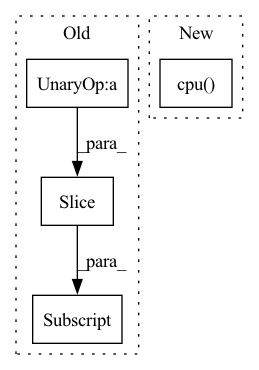

Pattern ID :38610
Before Change
**scaffolds, c_beta = n_aa!=4)
// add detached scn
if n_aa <=3:
new_coords[s, :-padding or None, n_aa:] = coords[:, n_aa:]
// add detachyed scn and =O, but not cbeta
elif n_aa == 4:
new_coords[s, :-padding or None, 5:] = coords[:, 5:]After Change
* padding: int. padding token. same as in sidechainnet: 20
Outputs: whole coordinates of shape (batch, L, 14, 3)
atom_mask = atom_mask.bool().cpu() .detach()
cum_atom_mask = atom_mask.cumsum(dim=-1).tolist()
device = backbones.deviceIn pattern: SUPERPATTERN
Frequency: 3
Non-data size: 4
Instances Fragment ID: 110426197
Project Name: lucidrains/alphafold2
Commit Name: af52b14b8943a19879fb5d9c6829f0d64d4717f9
Time: 2021-05-25
Author: ericalcaide1@gmail.com
File Name: alphafold2_pytorch/utils.py
M Class Name: AnonimousClass
N Class Name: AnonimousClass
M Method Name: sidechain_container(5)
N Method Name: sidechain_container(5)
M Parent Class:
N Parent Class:
M File Name: alphafold2_pytorch/utils.py
N File Name: alphafold2_pytorch/utils.py
M Start Line: 663
M End Line: 703
N Start Line: 659
N End Line: 697
Before Change
// use images which have high scores top self.save_number
scores, indices = torch.sort(scores, descending=True)
best_indices = indices[:self.save_number]
worst_indices = indices[-self.save_number:]
best_fake_images = fake_images[best_indices]
worst_fake_images = fake_images[worst_indices]
After Change
if not os.path.exists(self.image_save_path):
os.makedirs(self.image_save_path)
fake_images = fake_images.mul(0.5).add(0.5).squeeze().cpu()
image_grid = utils.make_grid(fake_images, nrow=self.save_row_number)
Fragment ID: 110426188
Project Name: luzhixing12345/anime-wgan
Commit Name: c309bb95d35f7c02abc2db995b2d8f7cd07c68a9
Time: 2022-05-15
Author: luzhixing12345@163.com
File Name: model/BaseModule.py
M Class Name: BasicGAN
N Class Name: BasicGAN
M Method Name: generate_images(1)
N Method Name: generate_images(1)
M Parent Class: nn.Module
N Parent Class: nn.Module
M File Name: model/BaseModule.py
N File Name: model/BaseModule.py
M Start Line: 90
M End Line: 113
N Start Line: 87
N End Line: 98
Before Change
_, latent = model.extract_latent(input)
print(latent.size())
real = latent[:,:n_bases//2,:]
imag = latent[:,n_bases//2:,:]
power = real**2+imag**2
plt.figure()After Change
power = torch.abs(latent)
plt.figure()
plt.pcolormesh(power[0].detach().cpu() .numpy(), cmap="bwr")
plt.colorbar()
plt.savefig("data/tasnet/power.png", bbox_inches="tight")
plt.close() Fragment ID: 110426189
Project Name: tky823/dnn-based_source_separation
Commit Name: 3ca1f1e5986cebb7df022f46f176de179d4cdbb6
Time: 2021-09-23
Author: 40362510+tky823@users.noreply.github.com
File Name: src/models/tasnet.py
M Class Name: AnonimousClass
N Class Name: AnonimousClass
M Method Name: _test_tasnet_base(0)
N Method Name: _test_tasnet_base(0)
M Parent Class:
N Parent Class:
M File Name: src/models/tasnet.py
N File Name: src/models/tasnet.py
M Start Line: 507
M End Line: 540
N Start Line: 319
N End Line: 338